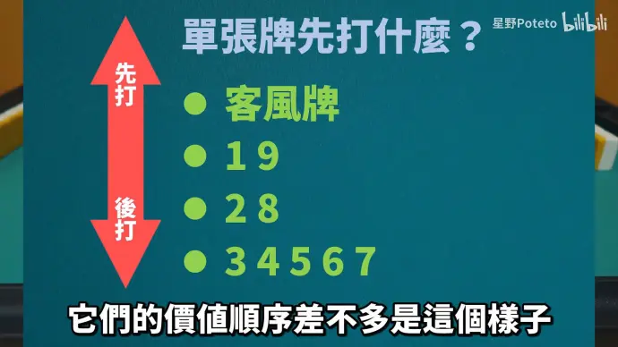
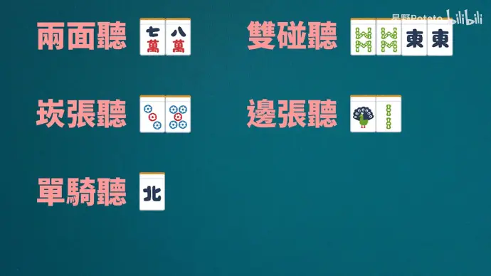
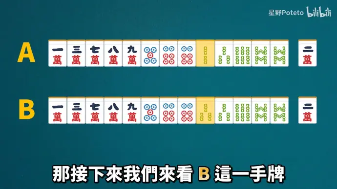

科学麻将死路一条。
前言（参考资料）
- 主要参考的是 星野 Poteto 的日麻牌效率系列（共十三讲） ；
- 拓展资料 《麻将学习·牌效率》前言·目录 ，包含一些案例分析。
第一讲：面子，搭子，数牌
1. 一些概念
- 牌效率：组牌技术，如何在摸打/鸣牌的过程中，尽可能高效（又快又好）地凑出胡牌型。
- 日麻处于对役的要求，需要谨慎鸣牌；
- 门清与鸣牌：鸣牌速度快、门清点数大。
- 雀头：一个对子。
- 面子：分为顺子（ABC）、刻子（DDD）、杠子（DDDD）。
- 一般来说，做顺子比刻子容易！ 一般做牌会以顺子为主要考虑方向。
2. 对子与搭子
-
对子：两张一样的牌，可以作为雀头或组成刻子。
-
搭子：可以组成顺子的两张牌，分为三种情况：
- 边张（12，89）；
- 坎张（35，68）；
- 两面（23，56）；
-
一般来说，搭子效率的规律如下：
- 两面 >> 坎张 > 边张；
- 靠中间的坎张（46）会比靠边的坎张（68）要好；
-
单张：不与其他牌组成对子或搭子的数牌。
- 有效牌：可以与单张组成对子和搭子的牌；如单张 1s，摸 1s（对子）2s（边张）3s（坎张）
- 不难发现规律：19单张的有效牌数只有3个，28单张有4个，3-7有5种有效牌数；
- 这意味着当出现单张数牌时，从牌效率的角度看，应该尽量保留3-7的数牌（除非你做国士）；
第二讲：字牌，序盘处理
1. 字牌：东西南北中发白
- 字牌只能组成对子、刻子、杠子，在组成面子的能力上不如数牌。
- 然而，字牌可以组成役牌：三元、场风、自风。
- 既是场风又是自风，则成为连风牌（2番）；
- 于是，客风在字牌中价值最低，连风牌>役牌>客风牌；
- 字牌价值会随着已现的张数增加快速下降！
- 经常出现这种情况：上家打了个客风，于是你也把手里的单张客风打掉了；
- 当然，如果手里缺役，还是可以留一下的；
2. 序盘阶段：找出价值最低的单张，然后打掉

- 边张、坎张：也被叫做愚型搭子。上面的牌留役牌可以利好愚型搭子，吃牌不怕没役。
- 14 与 69：当4或6出现了，则19的留存价值就几乎没有了——因为能1的有效牌被4覆盖了！
- 例如，摸到2s可以与1s组成边张，但也可以和4s组成坎张，而坎张>边张；
- 甚至如果你摸1s组成对子，说穿了也就和客风对子一回事，没啥卵用。
- 这种情况被称为有效牌重复；除了是宝牌/混老头等役种。
- 筋：1-4-7，2-5-8，3-6-9；同一条筋上的数牌，刚好没法组成面子，有效牌重复。
第三讲：对子处理
-
对子比起面子，非常容易做出来。
- 当手牌13张都不一样时，摸一张牌可以组成对子的概率约为1/3；
- 因此，做牌型的时候有个一般的法则为面子优先！
- 就算做到最后听牌了都没有雀头，也可以故意拆牌，单骑听牌！
-
对子的有效牌（2张）比两面的有效牌（8张）差了不是一点啊！
-
但对子有两条路可以走：进张一个牌，组成刻子；保留不动，成为雀头。
-
因此诞生一种牌型（双碰）：任意两副对子即可。
- 这种牌型的有效牌有4张，摸任何一边都能组出刻子和雀头。
- 这样，双碰的成牌效率就不输给愚型搭子了！
-
但是，三对子的情况就不一样了……
- 考虑你的机会成本，例如：手上13s摸3s，看起来赚了个对子，但其实是建立在损失坎张的情况下做的。
- 这样的话，本来有效牌4张2s，现在只剩下2张3s了（虽然也考虑可以碰的情况）
-
更多对子…… 可以考虑七对子，或者兼顾一般型。
第四讲：向听数、有效牌、五种听牌型
1. 基础概念
- 向听数：描述一副手牌至少还要摸进几张牌才可以听牌。
- 是一个用来衡量手牌好坏的重要指标；
- 一副手牌最烂可以六向听，其实五向听就很烂了；
- 进张：能让向听数减一的摸牌。
- 例如 67m 摸 5m 或 8m，都可以进张；
- 向听数越小进张数越少，越难前进；
- 有些牌并不能减少向听数，但可以提高当前的进张数量，称其为改良。
- 改良 + 进张 = 有效牌；
2. 听牌型
-
五种听牌类型：

- 可以听牌最多的为两面听，可以听至多八张；
- 可以听牌最少的为单骑听，至多只能听三张；
- 但另一方面，单骑听也是最为灵活的听牌类型；
- 顺子复合型也是双面听（如2345s 听 25s， 2234s 听 25s）
- 暗刻也可以组成复合型（如6777s 听 58s，还可听 6s 做雀头）
- 三面听牌型有三种11张牌可以胡。
- 如 23456s，听 147s；
- 要注意，12345s 是没这个待遇的；
第五讲：三张复合型
1. 复合型
- 由若干基本型组成的牌型称为复合型；
- 但某些复合型是无意义的（如134s，1s 有效牌重复）
- 对子复合型：如 223s，668m
- 坎张复合型：如 135s，468p
2. 对子复合型
-
对子复合型根据搭子的不同也分为三类。
- 当摸到一张牌可以形成对子复合型时，进张数会增加；
- 因此这张牌可以称为对子复合型的补强牌（如 244s 的 4s）；
-
复习一下：一副牌在两幅对子的情况下是最赚的；

-
对于AB两副牌，虽然仅差了一张牌，但处理方式完全不一样：
- 对于 A 来说，有两副对子，只需把较弱的对子复合型拆掉就行（6s）；
- 对于 B 来说，有三副对子，最好从对子里拆掉一个形成双碰：
- 3s 不好拆，因为拆完就一个单张了；
- 6p 和 8s 拆哪个？考虑到 56p 的进牌能力更强，听牌是双面听；而拆 8s 只是一个坎张听牌，效率很低；
- 所以结论是打掉 6p 比较好，即拆掉强搭的补强牌；
-
因此，补强牌应该留在较弱的搭子上（如122s，688s）：
- 口诀：两对拆弱搭（A），三对拆强搭（B）！
3. 坎张复合型（两坎）
-
坎张复合型其实是一个不错的牌型。
- 如 135s，有 24s 两种八张的进张；
- 相较于坎张，几乎翻了一倍；
- 相较于两面，在仅多出一张牌的前提下进张数一样；
-
然而也存在一些缺点：
- 首先就是减少了一张牌的空间，本来可以留安全牌或补强牌的；
- 其次，如果最后两坎要听牌了，还是得拆一张，做坎张听牌；
- 两坎很容易看漏！（如 3 567 78s，也可 357s, 678s，听 469s）；